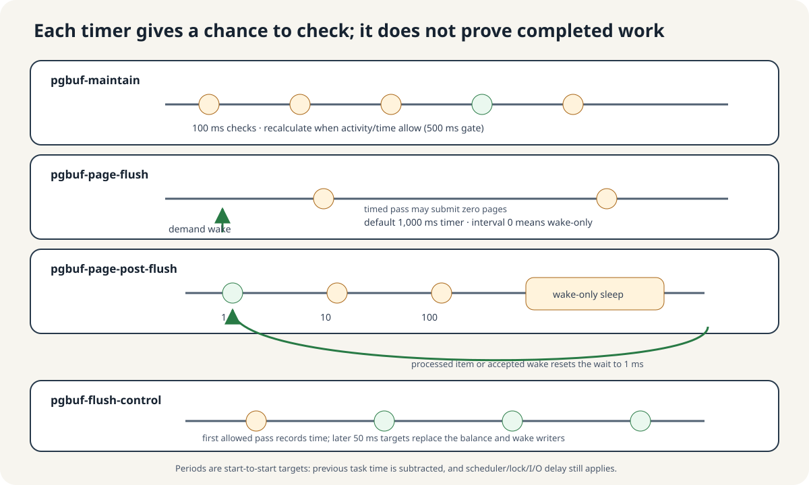
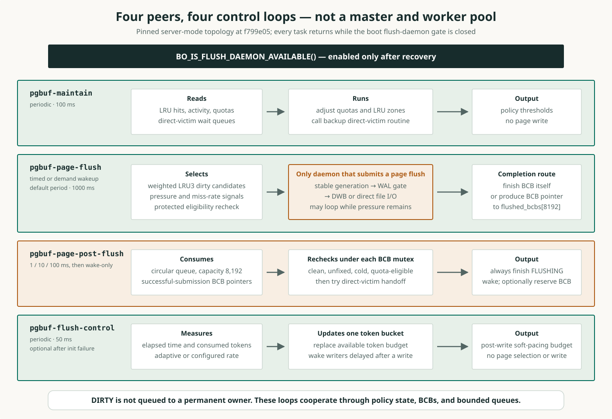
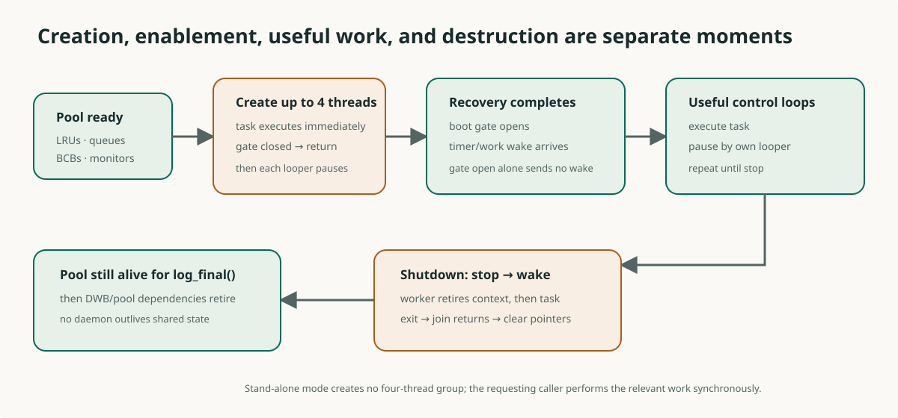

요청한 페이지를 담을 자리에 변경 내용이 남아 있다
독립적으로 구성한 시작 상태: 요청이 대량 스캔을 읽고 있지만, 서버가 페이지를 메모리에 모아 두는 페이지 버퍼는 가득 차 있습니다. 프레임은 데이터베이스 페이지 한 장을 담는 메모리 자리입니다.
이 예제에서 S3와 S4는 서로 다른 데이터베이스 페이지의 이름입니다. S3는 요청이 다음에 읽어야 할 스캔 페이지이며 메모리에 없습니다. S4는 이미 프레임에 있는 다른 페이지입니다. 지금은 아무도 사용하지 않지만 메모리 내용이 변경된 dirty 상태이므로, 그 변경 내용을 아직 페이지 저장장치로 보내야 합니다.
S3메모리에 없음S4사용 중 아님 · dirty변경 내용 보존 필요S3를 읽으려 하지만, 재사용하려는 메모리 자리는 S4가 차지하고 있습니다. 페이지 이름과 프레임은 다릅니다. 풀 크기는 생략한 개념도입니다.서버는 dirty 페이지의 프레임을 그대로 덮어쓸 수 없습니다. 먼저 안전한 기록 경로로 변경 내용을 보존하고, 프레임이 여전히 사용되지 않으며 안전하게 재사용할 수 있는지 확인해야 합니다. 백그라운드 작업은 다음 요청이 자리 부족을 겪기 전에 이 준비를 도울 수 있습니다.
Q&A · 모든 dirty 페이지가 네 daemon을 차례로 거치나요?
아닙니다. 네 daemon은 페이지 처리의 네 단계가 아니라 서로 다른 책임을 담당합니다. page-flush는 이미지를 제출하고, post-flush는 장부 처리를 맡을 수 있으며, maintenance와 flush-control은 정책과 pacing을 조정합니다.
프레임을 미리 준비하면 요청 경로의 일을 줄일 수 있다
같은 시작 상태에서 갈라지는 두 실행 순서: S3는 요청이 필요로 하지만 메모리에 없는 페이지입니다. S4는 사용 중이 아니며 보존해야 할 변경 내용이 남은 상주 페이지입니다. 페이지 한 장을 담는 메모리 자리인 프레임은 모두 차 있습니다.
여기서 데몬은 데이터베이스 서버 안에서 작업과 대기를 반복하는 백그라운드 스레드입니다. 포그라운드는 요청을 처리하는 스레드를, 백그라운드는 별도로 실행하는 스레드를 뜻합니다.
필요할 때 준비
- 요청 스레드
S3요청 도착빈 프레임 없음 - 요청 스레드
S4변경 내용 보존요청 후 안전한 기록 경로 처리 - 요청 스레드현재 재사용 조건 확인여전히 사용 중이 아니며 안전한가?
- 조건 확인을 통과한 경우같은 프레임에
S3읽기
백그라운드에서 미리 준비
- 백그라운드 스레드
S4변경 내용 보존요청 전에 안전한 기록 경로 처리 - 요청 스레드
S3요청 도착기록 준비를 앞서 마친 후보가 있음 - 요청 스레드현재 재사용 조건 확인여전히 사용 중이 아니며 안전한가?
- 조건 확인을 통과한 경우같은 프레임에
S3읽기
요청 스레드가 이 일을 모두 할 수도 있습니다. 두 번째 순서는 필요한 시점에 적절한 프레임이 준비되어 있을 때 읽기 경로에서 준비 비용을 덜어 줍니다. 성능 이점은 부하와 저장장치 지연에 달려 있습니다.
Q&A · background에서 미리 준비한 일이 헛수고가 될 수도 있나요?
요청이 도착하기 전에 준비한 페이지가 다시 변경되거나 사용될 수 있습니다. 이전 flush는 보존 작업을 수행했지만, 그 프레임은 기다리는 요청이 사용할 수 없는 상태가 될 수 있습니다.
한 워커가 I/O를 기다리면 다른 일도 함께 기다린다
설계 질문: 백그라운드 스레드 하나가 dirty 페이지를 기록하고, 관리 상태를 마무리하고, 보존 목표를 조정한 다음 기록 속도를 조절한다고 가정해 봅시다. 이 스레드가 느린 로그 기록이나 페이지 기록을 기다리는 동안 나머지 세 작업은 실행할 수 없습니다.
CUBRID는 이 작업들을 별도의 데몬에 맡깁니다. 각 데몬은 서버 안의 백그라운드 스레드로, 자기 태스크와 대기 정책을 갖습니다. 한 역할이 기다리는 동안 다른 역할이 실행할 수 있습니다. 이는 설계 선택이며, 측정으로 확인한 성능 보장은 아닙니다.
네 역할이 모든 페이지가 거쳐야 하는 네 단계는 아닙니다. page-flush만 페이지 이미지를 제출합니다. Maintenance는 보존 정책을 바꾸고, flush-control은 참여하는 기록 스레드의 대기를 조절합니다. 이 책임들을 유지하도록 스케줄링한다면 워커 하나도 가능한 대안입니다.
Q&A · 스레드가 네 개면 네 작업이 서로 막지 않나요?
그렇지 않습니다. 별도 실행은 blocking 작업 하나가 단일 worker를 독점하는 상황을 줄이지만, 공유 잠금·CPU·저장소에서는 여전히 경쟁할 수 있습니다. 실제 겹침과 지연은 관측해야 합니다.
네 작업은 서로 다른 네 종류의 상태를 바꾼다
시작 상태: S4는 메모리에 있는 사용하지 않는 페이지이며, 변경 내용을 아직 기록해야 합니다. 이 페이지의 BCB는 프레임의 관리 레코드로, 현재 페이지 식별자와 사용 상태, flush 상태를 추적합니다.
페이지 바이트 제출
dirty 페이지를 확인하고 안정된 바이트를 복사한 뒤 안전한 기록 경로로 사본을 보냅니다. 제출만으로 프레임을 재사용할 수 있는 것은 아닙니다.
관리 레코드 마무리
제출 후 BCB를 다시 확인하고 이전 flush 상태를 마무리한 뒤 대기 스레드를 깨웁니다. 적절한 프레임을 기다리는 요청에 제안할 수도 있습니다.
보존 목표 조정
활동 표본을 바탕으로 quota(풀에서 차지할 목표 몫)와 zone(보존 선호도가 서로 다른 그룹)을 조정합니다.
계속 기록하는 스레드의 속도 조절
페이지 크기 단위의 공유 크레딧 잔액을 교체합니다. 참여하는 기록 스레드는 OS 기록이 성공한 뒤 크레딧을 소비하며, 이후 기다릴 수 있습니다.
Q&A · 어느 역할이 dirty 후보를 재사용 가능한 상태로 만드나요?
어느 역할도 단독으로 재사용 권한을 주지는 않습니다. 보존 작업은 이전 쓰기 의무를 처리하고 완료는 메타데이터를 갱신합니다. allocator는 여전히 보호 아래 프레임의 현재 상태를 판단해야 합니다.
page-flush만 페이지 이미지를 제출한다
네 데몬은 서버 안의 백그라운드 작업입니다. 변경 내용을 아직 보존해야 하는 상주 페이지를 생각해 봅시다. 복사한 바이트를 기록하는 일과 프레임의 관리 레코드인 BCB를 마무리하는 일은 별개입니다. 나머지 두 역할은 그 페이지를 기록하는 대신 보존 정책과 기록 속도를 조절합니다.
| 데몬 | 해결하는 문제 | 페이지 바이트를 기록하는가? |
|---|---|---|
| Page-flush | 요청에 필요한 프레임에 기존 dirty 작업이 남아 있을 수 있습니다. 교체 후보를 수요보다 먼저 준비합니다. | 예 |
| Post-flush | 제출은 끝났지만 BCB 상태와 대기 스레드를 아직 처리해야 합니다. | 새 기록 없음 |
| Maintenance | 활동 양상이 달라집니다. 교체 그룹별로 메모리를 얼마나 보존할지 조정합니다. | 아니요 |
| Flush-control | 기록 스레드가 I/O를 한꺼번에 발생시킬 수 있습니다. 다음 작업의 속도를 늦출 수 있는 허용량을 갱신합니다. | 아니요 |
Q&A · post-flush가 같은 페이지를 다시 쓰나요?
이 역할은 새로운 페이지 쓰기를 수행하지 않습니다. 큐에는 저장소에 다시 제출할 페이지 이미지가 아니라 완료 처리에 필요한 BCB 포인터가 들어갑니다.
타이머는 작업 완료가 아니라 검사할 기회를 준다
데몬은 작업 후 기다리는 백그라운드 스레드입니다. 타이머는 목표 시간이 지나면 대기를 끝냅니다. 깨우기는 다른 스레드가 대기를 일찍 끝내 달라는 요청입니다. 둘 다 유효한 작업 완료의 증거는 아닙니다.
모든 태스크는 먼저 부팅 게이트를 확인합니다. 복구 후 페이지 버퍼 작업을 허용하는 공유 플래그입니다. Maintenance는 quota epoch(보존 목표 재계산)를 거절할 수 있습니다. Post-flush는 짧게 시작해 유휴 시 대기를 늘리며, 항목 소비나 수락된 깨우기는 1 ms로 되돌립니다. Flush-control은 게이트가 열린 뒤 첫 실행에서 시각만 기록합니다.

Q&A · daemon이 깨어났는데도 유용한 작업을 하지 않을 수 있나요?
task에 들어가도 boot gate가 닫혀 있거나 대기 항목이 없거나 정책 조건이 갱신을 거부할 수 있습니다. wake는 상태를 확인할 기회를 주며 결과를 보증하지 않습니다.
작업마다 기다리는 정책이 다르다
서버의 백그라운드 작업들은 서로 다른 이유로 기다립니다. 아래 주기는 태스크 시작 사이의 목표 시간입니다. 루프는 태스크 실행 시간을 빼며, 스케줄링이나 I/O 때문에 다음 시작이 늦어질 수 있습니다. 깨우기 전용 대기는 대기를 끝내는 타이머가 없다는 뜻입니다.
| 데몬 | 작업 | 목표 주기 또는 대기 증가 정책 | 누가 깨우기를 요청하는가? | 페이지 이미지 I/O? |
|---|---|---|---|---|
pgbuf-maintain | 풀의 목표 몫(quota)과 보존 zone 조정 | 100 ms마다 시도; 컴파일된 정책 | 일반 작업용 깨우기 없음 | 아니요 |
pgbuf-page-flush | 차가운 dirty 페이지를 보존해 프레임이 재사용 가능해지도록 준비 | page_flush_interval: 기본값 1,000 ms; 0은 깨우기 전용 대기 | 프레임을 찾지 못한 요청 또는 교체 후보 탐색 압력 | 예 |
pgbuf-page-post-flush | BCB(프레임 관리 레코드)를 마무리하고 프레임을 제안할 수 있음 | 1 → 10 → 100 ms 후 깨우기 전용 대기; 컴파일된 정책 | Page-flush가 완료 큐인 flushed_bcbs에 BCB 포인터를 넣는 데 성공한 뒤 깨우기 요청 | 새 기록 없음 |
pgbuf-flush-control | OS 기록 후 참여하는 기록 스레드를 멈춰 기다리게 할 수 있는 페이지 단위 크레딧 교체 | 목표 50 ms; 컴파일된 정책 | 일반 작업용 깨우기 없음 | 아니요 |
설정 가능한 Page-flush 주기는 다른 역할들의 컴파일된 대기 주기와 다릅니다.
Q&A · post-flush가 결국 타이머 없이 기다리는 이유는 무엇인가요?
대기 시간을 늘리면 유휴 polling을 줄일 수 있고, producer가 작업을 넣으면 깨울 수 있습니다. 이 정책에는 유지된 큐 상태와 올바른 wake·확인 순서가 필요하며 완료 기한을 보장하지는 않습니다.
Q&A · 그럼 post-flush를 깨우는 주체는 누구인가요?
정상 작업에서는 page-flush 데몬이 직접 깨웁니다. 앞 답변의 producer는 페이지 이미지를 제출하고 완료 처리를 큐에 넘기는 page-flush 스레드입니다. pgbuf_bcb_flush_with_wal()에서 이미지 제출에 성공한 뒤 다음 조건을 모두 만족해야 합니다.
- Page-flush 경로의 호출입니다(
is_page_flush_thread == true). - Post-flush 데몬이 존재합니다.
- 재사용할 프레임을 기다리는 allocator 요청이 있습니다.
pgbuf_Pool.flushed_bcbs->produce(bufptr)가 성공해 BCB 포인터를 큐에 넣습니다.
이후 pgbuf_Page_post_flush_daemon->wakeup()을 호출합니다. 순서는 큐에 작업 게시 → 깨우기 요청입니다. 조건이 하나라도 실패하면 제출한 스레드가 해당 BCB의 완료 처리를 직접 수행합니다. Allocator는 프레임을 구하지 못했을 때 page-flush를 깨우고, page-flush가 위 조건을 만족하면 post-flush를 깨웁니다. 두 깨우기는 서로 다른 호출입니다.
서버 종료 때는 공통 데몬 종료 코드가 깨웁니다. pgbuf_daemons_destroy()가 post-flush 데몬을 파괴할 때 daemon::stop_execution()이 stop을 설정하고 wakeup() 후 join()합니다. 이 깨우기는 종료를 위한 것이며, 남은 큐 작업을 모두 처리한다는 보장은 아닙니다.
실행 중인 스레드에 보낸 wake는 다음 대기를 위한 알림으로 저장되지 않습니다. 큐에 작업이 남아 있다는 사실과 다시 실행할 기회가 생긴다는 사실을 구분해야 합니다. 대기 직전 wake의 한계에서 이 순서를 이어 봅니다.
고정 소스: 큐 삽입·wake·직접 처리 · Allocator의 page-flush 깨우기 · 데몬 그룹 종료 · stop·wake·join
깨우기가 사라져도 공유 상태에는 작업이 남는다
생산자는 작업을 만들고 소비자는 처리합니다. 큐는 대기 중인 항목을 공유 메모리에 보관합니다. 검사 조건(predicate)은 요청이 여전히 프레임을 필요로 하는지처럼 태스크가 확인하는 조건입니다. 이 보존된 상태는 너무 이른 깨우기 이후에도 검사할 때까지 남습니다. RAM의 상태이며 장애 후에도 남는 저장장치 영속성을 뜻하지 않습니다.
wakeup()은 잠든 waiter를 깨웁니다. 스레드가 실행 중일 때는 다음 대기를 위한 신호를 저장하지 않습니다. 소비자는 다음 태스크 진입 때 큐나 압력을 다시 확인해야 합니다.Q&A · 큐에 작업이 남아 있어도 wake를 놓치면 처리가 늦어질 수 있나요?
네. 작업 보존은 항목을 잊지 않게 하지만, 처리하려면 다음 task 진입이 필요합니다. wake-only 대기에서는 이후 수락된 신호나 지원되는 다른 대기 종료 사건이 중요합니다.
각 루프는 공유 상태를 확인한 뒤 행동한다
BCB는 한 페이지의 메모리 자리인 프레임을 관리합니다. Fix로 사용 중이면 재사용할 수 없고, mutex는 검사를 보호하는 잠금입니다. LRU3는 차가운 zone, quota는 보존할 몫입니다. WAL은 제출 전 로그 영속화 규칙, DWB는 이미지 임시 보관입니다. 토큰은 속도 조절 크레딧입니다. VS-20은 불확실성 레지스트리 항목입니다. 이 리비전은 백업 루프 본문을 건너뜁니다. allocator(프레임을 찾는 요청 경로)의 기아는 미측정입니다.

Q&A · quota나 token 잔액이 BCB 안전 검사를 대신할 수 있나요?
아닙니다. quota는 보존 선호를 정하고 token은 참여 writer의 속도를 조절합니다. 어느 것도 현재 식별자, 사용자 부재, 보존 완료, 프레임 덮어쓰기 권한을 증명하지 않습니다.
데몬마다 훑어보는 대상이 다르다
BCB는 프레임 하나의 관리 레코드입니다. 풀에는 BCB를 보관하는 공간과 LRU 리스트 배열이 따로 있습니다. 각 LRU는 BCB들이 링크로 이어진 교체 목록이며, private과 shared LRU 모두 같은 리스트 배열에 들어 있습니다. 모든 리스트의 통계 숫자를 읽는 것과 리스트 안의 모든 BCB를 따라가는 것은 서로 다른 작업입니다.
| 데몬 | 무엇을 훑나요? | 어디까지 보나요? |
|---|---|---|
pgbuf-page-flush | 모든 리스트의 크기 정보, 이어서 선택한 리스트의 BCB 링크 | 탐색 비중이 0인 리스트는 건너뜁니다. 대상 리스트의 차가운 꼬리에서 배정된 개수만큼 봅니다. |
pgbuf-maintain | Quota 갱신이 허용되면 모든 private/shared 리스트의 활동 통계와 설정 | 각 리스트를 갱신합니다. 보호 구역을 줄여야 하는 리스트에서만 경계의 BCB들을 이동시킵니다. |
pgbuf-page-post-flush | 완료 큐인 flushed_bcbs에 들어온 BCB 포인터 | 다음 항목을 꺼낼 수 없을 때까지 처리합니다. 도중에 항목이 들어오면 이번 처리가 길어질 수 있습니다. |
pgbuf-flush-control | 경과 시간과 공유 속도 조절 크레딧 상태 | 크레딧을 갱신합니다. 페이지를 찾는 탐색은 하지 않습니다. |
예를 들어 BCB가 100,000개이고 LRU 리스트가 20개라면, 리스트 20개의 통계를 읽었다고 해서 BCB 100,000개를 모두 본 것은 아닙니다. 이해를 위해 구성한 크기 예시이며, 측정한 풀의 크기가 아닙니다.
리스트 크기와 quota 갱신 · 후보 탐색 · 완료 큐 · 크레딧 태스크.
Page-flush는 대상 LRU의 꼬리에서 링크를 따라간다
탐색의 시작점: BCB는 메모리에 있는 프레임 하나를 관리하고, dirty는 변경 내용을 아직 기록해야 한다는 뜻입니다. 각 LRU는 링크로 이어진 교체 목록입니다. LRU3는 꼬리에 있는, 보호가 가장 약한 차가운 구역입니다. 한 번의 후보 수집에서 살펴볼 BCB 개수를 정합니다.
- 어느 리스트를 얼마나 볼지 정합니다. 리스트 크기와 quota(보존할 몫)를 읽어 LRU마다 탐색 비중을 계산합니다. 리스트 배열을 인덱스 순서로, shared 다음 private 순서로 봅니다. 비중이 0이면 건너뜁니다. 비중이 크면 더 많이 살펴보지만, 순서를 앞당기지는 않습니다.
- 한 리스트의 링크를 따라갑니다. 그 LRU를 잠그고
bottom에서 시작해prev_BCB를 따라 머리 쪽으로 올라갑니다. 배정된 개수를 다 보거나, 리스트가 끝나거나, LRU3 밖의 BCB를 만나면 멈춥니다. 잠금을 풀고 다음 리스트로 갑니다. - Dirty 후보를 모읍니다. Clean BCB도 방문 개수에 포함됩니다. Dirty BCB를 만나면 포인터와 페이지 식별자를 임시 후보 배열에 저장합니다.
- 쓰기 전에 다시 검사합니다. 나중에 저장한 BCB를 하나씩 잠급니다. 페이지 식별자가 바뀌었거나, 이미 clean이거나 flush 중이거나, LRU3를 벗어났거나, 다른 스레드가 사용 중이면 건너뜁니다. 페이지 제출 전에 필요한 WAL이 영속화되어 있어야 합니다.
작은 구성 예시: 꼬리부터 clean → dirty이지만 사용 중 → dirty이고 미사용인 BCB가 이어져 있고, 모두 LRU3라고 합시다. 방문 개수가 2이고 도중에 상태가 바뀌지 않으면 앞의 두 개만 봅니다. 두 번째는 후보에 넣지만 사용 여부 재검사에서 탈락합니다. 세 번째는 이번 탐색 범위 밖입니다.
방문 개수는 어떻게 정하고, 다음 탐색은 언제 하나요?
기본 방문량은 풀 크기 × 설정된 flush 비율에 압력 보정을 적용하고, 페이지 바이트로 200 MiB에 해당하는 상한을 둡니다. 비중이 양수인 각 리스트에 정수 비례 배분하되 최소 1개를 봅니다. 정수 절삭·최소값 때문에 기본 방문량이 실제 전체 방문 수의 정확한 상한은 아닙니다. 요청 스레드의 별도 victim 탐색에 쓰는 1,000개 제한과도 다릅니다.
압력이 계속되면 데몬은 후보 수집을 다시 할 수 있습니다. 매번 리스트 꼬리에서 다시 시작하며, BCB 배열에서 마지막으로 본 위치를 기억해 이어가는 방식은 아닙니다. 중단 힌트에 따라 내부 루프를 끝낼 수도 있습니다. 선택적 이웃 페이지 묶음 쓰기는 가까운 페이지 식별자를 resident hash에서 찾습니다. BCB 저장 공간 전체를 훑지 않습니다. 이웃 페이지 설정 →
별도의 명시적 전체 flush 작업인 pgbuf_flush_all_helper()는 num_buffers만큼 반복합니다. 이 데몬의 후보 탐색과는 다른 경로입니다.
Maintenance는 리스트 통계를 읽고 구역 경계를 조정한다
탐색의 시작점: 각 private/shared LRU는 활동 통계와 구역별 개수를 가진 연결 리스트입니다. Quota는 private 리스트가 보존할 몫의 목표입니다. LRU1/LRU2는 더 보호하는 구역, LRU3는 차가운 구역입니다. BCB는 프레임 하나를 관리합니다.
- 먼저 갱신할 때인지 확인합니다. 100 ms 주기로 태스크에 진입해도, quota가 비활성화되어 있거나 시간·활동량 조건을 통과하지 못하면 리스트를 훑기 전에 quota 조정 함수에서 반환할 수 있습니다.
- 모든 리스트의 통계를 읽습니다. 갱신이 허용되면 LRU 배열 전체를 돕니다. 표본 접근 횟수를 읽고 초기화하고, private 활동량 추정치를 갱신하고, 후보 개수를 합칩니다. 리스트별로 모아 둔 숫자를 읽는 것이며, BCB를 하나씩 찾아가 접근 여부를 조사하지 않습니다.
- Private, 이어서 shared를 갱신합니다. 모든 private 항목을 돌며 quota와 구역 목표 크기를 정합니다. 이어서 모든 shared 항목을 돌며 구역 목표 크기를 정합니다. 적합한 후보가 있는 리스트는 해당 victim 탐색 큐에 알립니다. Private에는 quota 조건도 적용합니다.
- 경계에서 넘치는 만큼 이동시킵니다. 보호 구역이 너무 크면 그 리스트를 잠급니다. LRU2의 끝에서 시작하고, LRU2가 비어 있으면 LRU1의 끝에서 시작합니다. 링크를 따라 넘치는 BCB를 LRU3로 내리고, 필요하면 LRU1도 LRU2로 줄입니다. 각 조정은 목표 크기에 도달하면 멈춥니다.
작은 구성 예시: LRU1 + LRU2에 BCB가 30개인데 새 합계 목표가 25개라면, 경계에 있는 5개를 보호 구역 밖으로 옮깁니다. Dirty 페이지를 찾으려고 모든 BCB를 검사하는 작업은 아닙니다. 목표를 크게 줄이면 이동할 BCB 수도 많아질 수 있습니다.
별도 백업 경로의 한계: 기다리는 요청에 프레임을 제안하려는 보조 함수는 고정 리비전에서 두 리스트 루프를 건너뜁니다(불확실성 항목 VS-20). 위의 quota 갱신과 구역 이동은 실행되며, allocator 기아는 미측정입니다. 백업의 제어 흐름 →
flush 완료 처리와 기록 속도 조절은 서로 다른 일이다
시작 상태: 안정된 페이지 사본이 설정된 제출 경계를 통과했습니다. 프레임의 관리 레코드인 BCB는 아직 완료 처리가 필요합니다. 별도로 기록 스레드는 다음 기록을 계속하기 전에 속도 조절을 받을 수 있습니다.
Q&A · flush waiter가 깨어났는데 writer는 token을 기다릴 수 있나요?
네. 서로 다른 조건을 기다립니다. 하나는 이전 이미지의 완료 처리가 필요하고, 다른 하나는 OS 쓰기 후 pacing credit이 필요합니다. 한 조건이 충족되어도 다른 조건이 충족되는 것은 아닙니다.
각 스레드는 태스크를 실행한 뒤 대기 시간을 정한다
여기서 데몬은 이 서버 안의 백그라운드 스레드입니다. 태스크는 수행하는 일이고, looper는 대기 시간을 고르며, waiter는 대기와 깨우기 요청을 처리합니다.
create_daemon() 호출이 성공하면 std::thread 하나를 시작하고 관리되는 실행 컨텍스트, 즉 이 스레드가 사용하는 서버 상태를 제공합니다. 즉시 태스크를 실행한 다음 cubthread::looper에 대기 방법을 묻고 반복합니다. 네 역할은 각각 자기 루프를 갖습니다.
그 뒤의 고정 주기 실행에서는 이전 태스크 실행 시간을 뺍니다. 100 ms 주기에서 태스크가 70 ms를 썼다면 남은 목표 대기는 30 ms입니다. 주기를 모두 썼다면 타이머 대기는 0이 될 수 있습니다. 이때도 실행 기회를 얻을 뿐이며, 태스크의 조건 검사가 작업을 거절할 수 있습니다.
Q&A · task 실행이 설정된 주기보다 오래 걸리면 어떻게 되나요?
그 pass에는 타이머 대기가 남지 않을 수 있습니다. looper가 이미 지난 시간을 되돌리거나 즉시 스케줄링을 보장할 수는 없으며, 다음 진입의 실제 작업도 task 조건이 결정합니다.
잠들기 전의 깨우기는 다음 실행을 예약하지 않는다
Q05 · 잠들기 전에 도착한 깨우기
독립적으로 구성한 시작 상태: Page-flush는 주기가 0인 백그라운드 스레드이므로 대기에 시간 제한이 없습니다. 복구 중 태스크가 유효한 작업을 허용하는 플래그인 부팅 게이트가 닫힌 것을 보고 반환했습니다. waiter는 아직 RUNNING이며, 아직 대기에 들어가지 않았다는 뜻입니다.
이제 게이트가 열립니다. waiter가 RUNNING인 동안 다른 스레드가 wakeup()을 호출한 다음 page-flush가 대기에 들어갑니다. 깨우기는 SLEEPING일 때만 수락되며, 나중에 쓸 신호는 기록되지 않습니다.
예측: 어떤 추가 사건이 있어야 다음 태스크 진입을 설명할 수 있을까요?
논의한 뒤 설명 보기
너무 일찍 온 깨우기는 저장되지 않았습니다. 게이트를 열면 작업은 허용되지만 스레드는 깨어나지 않으며, 주기 0에는 시간 제한도 없습니다. 나중에 SLEEPING일 때 수락된 깨우기나 소스가 뒷받침하는 다른 대기 종료 경로를 확인해야 합니다. 유한한 타이머라면 다시 시도할 기회를 줄 뿐, flush 완료를 증명하지는 않습니다.
추가 질문: 타이머에 유한한 시간이 있다면 설명이 어떻게 달라질까요?
Q&A · 무한 대기 중인 스레드의 interval을 양수로 바꾸면 바로 깨어나나요?
파라미터 대입 자체는 wake를 보내지 않습니다. 실행 중인 worker가 별도로 수락된 work wake를 통해 기존 대기를 벗어난 뒤, 다음 pause에서 새 interval을 읽어야 합니다.
복구는 작업을 허용하고 종료는 작업이 끝나기를 기다린다
부팅 시작 상태: 백그라운드 작업이 시작되기 전에 페이지 버퍼 풀과 관리 레코드, 교체 목록, 큐, 모니터가 존재합니다. 부팅 게이트는 복구가 필요한 상태를 준비하는 동안 유효한 페이지 버퍼 작업을 막는 공유 플래그입니다.
- 이중 쓰기 버퍼(DWB)를 복구한 뒤 서버 부팅은
pgbuf_daemons_init()호출로 네 역할의 생성을 시도합니다. 이 시점에는 로그 복구가 아직 끝나지 않았습니다. - 생성된 워커는 즉시 태스크를 실행합니다. 복구 중에 진입한 태스크는 닫힌 게이트를 보고 반환합니다.
- 복구가 끝나면 부팅 코드가 게이트를 엽니다. 각 역할은 자기 타이머나 작업용 깨우기에 따른 이후 태스크 진입에서 열린 게이트를 확인합니다. 게이트를 여는 동작 자체는 깨우기를 보내지 않습니다.
- 정상 종료에서는 호출자가 stop을 설정하고 잠든 워커를 깨웁니다. 실행 중인 태스크는 반환해야 합니다. 이어서 워커가 실행 컨텍스트와 태스크를 정리하고 종료한 뒤 호출자의
join()이 반환합니다. 관리자는 데몬 포인터를 비웁니다. - 그룹은 maintenance → page-flush → post-flush → control 순서로 멈춥니다. 이 과정은
log_final()과 그 뒤의 풀 해제보다 먼저 이루어집니다.
Stand-alone 모드에서는 이 네 스레드를 생성하지 않습니다. 백그라운드 page-flush를 사용할 수 없으면 해당 요청 경로가 교체 후보를 동기적으로 flush할 수 있습니다. 생성이 언제나 성공하는 것은 아닙니다. flush-control은 초기화 실패로 없을 수 있습니다.
워커 안에서 컨텍스트와 태스크 정리 · 선택적인 control 초기화와 그룹 순서.
Q&A · 복구 gate를 열기 전에 worker를 만드는 이유는 무엇인가요?
생성은 실행 context를 마련하고, gate는 페이지 버퍼 작업이 너무 일찍 실행되지 않게 별도로 막습니다. 생성된 스레드가 복구 중 task에 들어가도 유용한 작업 없이 반환할 수 있습니다.
Q&A · 여기서 daemon은 별도 OS 프로세스인가요?
여기서는 생성에 성공한 각 역할이 데이터베이스 서버 내부의 스레드입니다. 관리되는 context를 갖지만 풀 저장 공간은 공유하므로, 스레드 종료와 공유 자원 수명을 함께 조정해야 합니다.
부팅은 페이지 버퍼 작업을 허용하기 전에 워커를 만든다
부팅 시작 상태: 페이지 버퍼 풀은 이미 존재합니다. 복구는 데이터베이스에 필요한 페이지와 로그 상태를 다시 구성합니다. 공유 부팅 게이트가 이 백그라운드 태스크들의 너무 이른 접근을 막습니다.
pgbuf_initialize()단계에서 프레임, BCB(프레임 관리 레코드), 교체 목록, quota·활동 배열과 큐를 준비했습니다.xboot_restart_server()에서 DWB 페이지를 읽고 복구합니다. DWB는 페이지 이미지를 보호하는 선택적 임시 보관 버퍼입니다.pgbuf_daemons_init()에서 maintenance → page-flush → post-flush → flush-control 생성을 시도합니다. 이는 생성 순서이며 페이지가 통과하는 파이프라인이 아닙니다.- 부팅 코드는 별도의 DWB 보조 그룹을 만든 뒤
log_initialize()과 로그 복구를 실행합니다. - 부팅 코드는
boot_after_copydb()이후BO_ENABLE_FLUSH_DAEMONS()로 게이트를 엽니다. 플래그를 여는 동작 자체는 깨우기를 보내지 않습니다.
생성에 성공한 워커는 게이트가 닫혀 있는 동안에도 태스크에 진입할 수 있습니다. 이 진입은 유효한 페이지 버퍼 작업 전에 반환하며, 이후 진입에서야 작업 허용 여부를 확인할 수 있습니다.
풀 초기화 · 재시작과 게이트 순서.
Q&A · 생성 순서가 각 페이지의 처리 순서이기도 한가요?
아닙니다. 이 순서는 시작 시 생성 시도의 순서입니다. 생성 후 worker는 독립적인 loop를 실행하며, 페이지가 모든 역할을 거치거나 생성 순서를 따를 필요는 없습니다.
태스크는 일부 상태를 소유하고 나머지를 빌려 쓴다
생성에 성공한 뒤: 각 데몬은 태스크(작업 객체), looper(대기 정책), 스레드 컨텍스트(오류 처리를 포함한 서버 상태)를 갖습니다. BCB는 프레임 하나를 관리합니다. 풀 소유 레코드와 큐는 사용하는 스레드보다 오래 살아 있어야 합니다. mutex는 공유 상태 변경을 보호하는 잠금입니다.
| 역할과 태스크 | 대기 정책 | 작업 상태의 소유자 |
|---|---|---|
| Maintenance 호출 객체 | 고정 100 ms | 풀 소유 활동 배열, 목표 몫(quota) 배열과 교체 목록. 목록 mutex가 목록 변경을 보호합니다. |
| Page-flush 태스크 객체 | 대기할 때마다 콜백이 설정된 주기를 읽음 | 태스크 소유 성능 추적기. 후보 배열, 목록, 압력 모니터는 풀 소유. |
| Post-flush 호출 객체 | 1 / 10 / 100 ms로 증가한 뒤 깨우기 전용 대기 | 풀 소유 flushed_bcbs 완료 큐, allocator 대기 큐와 BCB 저장 영역. |
| Flush-control 태스크 객체 | 고정 50 ms | 태스크가 첫 실행 시각을 소유하고 정적 토큰 버킷(공유 속도 조절 크레딧)의 정리를 담당함. |
워커는 종료할 때 컨텍스트를 멈추고 정리한 뒤 태스크를 정리합니다. Control의 태스크 정리가 토큰 버킷을 해제하며, 이는 스레드 종료와 join 완료보다 먼저입니다.
태스크와 컨텍스트의 정확한 식별자
호출 객체 태스크가 실행하는 함수는 pgbuf_page_maintenance_execute와 pgbuf_page_post_flush_execute입니다. 태스크 클래스는 pgbuf_page_flush_daemon_task와 pgbuf_flush_control_daemon_task입니다. 각 워커는 관리 컨텍스트를 확보하고 유형을 TT_DAEMON, 트랜잭션 인덱스를 LOG_SYSTEM_TRAN_INDEX로 설정한 뒤 오류 컨텍스트를 등록합니다.
Q&A · join 전에 task를 삭제하면 왜 위험한가요?
worker가 아직 그 task를 실행하거나 task 소유 자원을 정리하고 있을 수 있습니다. 수명 관리 절차가 더 이상 사용자가 없음을 확인할 때까지 필요한 task·context·공유 저장 공간은 유효해야 합니다.
생성 실패와 재시작 실패는 정리 방식이 다르다
생성 경계: 서버는 페이지 버퍼 데몬을 최대 네 역할까지 만들려고 시도하며, 생성 성공은 보장하지 않습니다. 풀 초기화가 할당 오류를 반환하면 pgbuf_finalize()를 호출하고 해당 초기화를 중단합니다.
범용 관리자는 사용할 수 있는 스레드 엔트리가 없으면 NULL을 반환할 수 있습니다. 역할별 초기화 함수는 이 반환값을 확인하지 않으며, 이 경로에서 워커 없이 남은 태스크를 정리하지도 않습니다. 이 생성 경로들에는 할당 예외나 스레드 생성 예외를 처리하는 로컬 복구 코드도 없습니다. 소스에서 확인되는 정리의 한계이며, 운영 환경에서 실제로 발생했음을 보인 실패는 아닙니다.
Flush-control에는 별도의 선택적 경로가 있습니다. 공유 속도 조절 크레딧 잔액인 토큰 버킷의 초기화가 오류를 반환하면, 호출자는 retire() 호출 없이 태스크를 삭제하며 control 데몬을 만들지 않습니다. 버킷이 공유 상태로 공개되지 않았으므로 토큰 획득은 아무 일도 하지 않습니다. 버킷 초기화와 실패 세부 사항 →
재시작 오류 경계: 부팅 게이트는 페이지 버퍼 작업을 허용하는 공유 플래그입니다. 정리 코드는 게이트를 닫고 페이지 버퍼와 이중 쓰기 버퍼(DWB) 워커 그룹을 없앤 뒤 log_final()을 호출합니다. 게이트는 이후 태스크 작업을 막지만 실행 중인 태스크를 취소하지는 않습니다. 필요한 공유 저장 영역은 워커 정리와 join이 끝날 때까지 살아 있어야 합니다.
풀 초기화의 오류 반환 시 정리 · 관리자의 생성과 삭제 · 재시작 오류 시 정리.
Q&A · 선택적인 control 초기화가 실패하면 페이지 쓰기도 불가능한가요?
설명한 bucket 미게시 경로에서는 token 획득이 아무 일도 하지 않습니다. 이 pacing 수단이 없어지는 것이며, 페이지 쓰기 안전 의무가 사라지거나 다른 초기화 경로가 모두 성공한다는 뜻은 아닙니다.
stop을 설정해도 공유 메모리를 바로 해제할 수는 없다
Q06 · Stop 설정은 아직 join 완료가 아니다
독립적으로 구성한 시작 상태: 데몬은 여전히 태스크 안에서 BCB(프레임의 관리 레코드)나 공유 큐를 읽고 있을 수 있습니다. 제안된 종료 방식은 stop을 설정하자마자 이 객체들을 해제한 다음 워커를 깨우고 join()을 호출해 스레드가 끝나기를 기다립니다.
stop 플래그는 바깥 루프의 종료를 요청하며 이미 실행 중인 태스크를 취소하지 않습니다. 워커는 종료 전에 컨텍스트와 태스크를 정리합니다. Join은 그 종료가 끝난 뒤에만 반환합니다.
예측: 공유 객체를 해제하기 전에 어떤 사실을 확인해야 할까요?
논의한 뒤 설명 보기
저장 영역을 해제하는 시점에는 어떤 데몬도 그 영역에 접근할 수 없어야 합니다. 제안된 방식은 이를 확인하지 않습니다. 실행 중인 태스크는 stop 설정 후에도 계속될 수 있습니다. 깨우기는 잠든 워커를 대기에서 빠져나오게 합니다. 실행 중인 워커는 태스크를 끝내고 컨텍스트와 태스크를 정리한 뒤 스레드가 종료됩니다. join으로 종료를 확인할 때까지 필요한 풀과 큐 저장 영역을 유지해야 합니다.
추가 질문: 작업 중인 데몬과 잠든 데몬은 어떤 사건의 순서가 다를까요?
Q&A · stop을 설정했는데도 자는 daemon을 깨우는 이유는 무엇인가요?
자는 스레드는 대기를 벗어나야 바깥 loop의 stop 처리에 도달합니다. 실행 중인 task는 반환해야 하며, wake가 현재 I/O나 helper 호출을 취소하지는 않습니다.
나중에 수락된 깨우기가 열린 게이트를 확인할 기회를 준다
스레드 생성 → 작업 허용 → 종료 확인
독립적으로 초기화한 구성 예제: Page-flush는 주기가 0인 백그라운드 스레드이므로 시간 제한이 없습니다. 부팅 게이트는 복구 후 유효한 작업을 허용하는 플래그입니다. waiter는 대기 전에는 RUNNING, 대기 중에는 SLEEPING, 깨우기로 대기가 끝날 때는 AWAKENING입니다. 4단계에서 프레임이 필요한 요청 경로인 allocator가 신호를 보낼 때까지 추가 깨우기는 없습니다. 다른 역할은 각자의 타이머와 큐를 유지합니다.
1. 복구 중 스레드 생성
행위자 / 사건: 부팅 코드가 데몬 생성; 태스크 실행
- 부팅 게이트
- closed
- Page-flush waiter / 태스크
- RUNNING → task return
- 공유 풀 / 큐
- alive
- 유효한 결과
- none
판단 조건: 닫힌 게이트를 보고 유효한 작업 전에 반환
변경 / 결과: 스레드는 존재함; 게이트는 여전히 닫힘; 제출 없음
2. 게이트가 열리고 깨우기가 너무 일찍 도착
행위자 / 사건: 부팅 코드가 게이트를 엶; 다른 스레드가 wakeup 호출
- 부팅 게이트
- open
- Page-flush waiter / 태스크
- RUNNING; wake not latched
- 공유 풀 / 큐
- alive
- 유효한 결과
- none
판단 조건: wakeup은 SLEEPING만 바꿈; 이 waiter는 RUNNING
변경 / 결과: 게이트 닫힘→열림; 다음 대기를 위한 깨우기는 저장되지 않음
3. 깨우기 전용 대기 진입
행위자 / 사건: 데몬이 대기에 들어감
- 부팅 게이트
- open
- Page-flush waiter / 태스크
- SLEEPING; infinite wait
- 공유 풀 / 큐
- alive
- 유효한 결과
- none
판단 조건: 주기=0이므로 시간 제한 없음
변경 / 결과: RUNNING→SLEEPING. 게이트가 열린 것만으로 새 태스크 진입이 생기지 않음
4. 나중의 깨우기가 실행 기회를 줌
행위자 / 사건: allocator 압력이 잠든 waiter에 신호를 보냄
- 부팅 게이트
- open
- Page-flush waiter / 태스크
- task entry; helper call
- 공유 풀 / 큐
- pressure recorded; alive
- 유효한 결과
- entry only; submission not assumed
판단 조건: SLEEPING일 때 깨우기가 수락됨; 게이트 재확인
변경 / 결과: SLEEPING→AWAKENING→RUNNING; 후보 처리 함수 진입. 제출에는 여전히 조건 검사가 필요
5. join이 반환하기 전에 워커가 자원을 정리
행위자 / 사건: 종료 코드가 stop과 깨우기를 요청; 워커가 태스크를 끝내고 컨텍스트·태스크를 정리한 뒤 종료; 호출자의 join 반환
- 부팅 게이트
- open
- Page-flush waiter / 태스크
- stop → wake → join
- 공유 풀 / 큐
- alive through join; teardown later
- 유효한 결과
- thread ended
판단 조건: 태스크 완료, 워커 자원 정리, join까지 풀·큐 저장 영역 유지
변경 / 결과: Stop 요청 → 잠든 워커를 깨움 → 워커 컨텍스트·태스크 정리 → 스레드 종료 → join 반환. 필요한 풀·큐 저장 영역은 이후에 해제 가능
소스에 근거한 구성 실행 순서이며 런타임 증거는 아닙니다. waiter:76–101 · daemon:53–105 · boot:2405–2441
Q&A · 나중에 수락된 wake가 페이지 제출을 증명하나요?
gate가 열린 상태에서 다음 task 실행 기회가 생겼음을 설명합니다. 후보 적격성, WAL 준비, 제출 성공은 타임라인에서 각각의 사건으로 확인해야 합니다.
Join은 워커의 자원 정리가 이미 끝났음을 확인한다
수명 지도: 풀은 메모리의 공유 페이지 저장 영역입니다. 게이트는 태스크의 접근 시점을 제어합니다. 종료할 때 호출자가 stop을 요청하고 잠든 워커를 깨웁니다. 워커는 실행 중인 태스크를 끝내고 컨텍스트와 태스크를 정리한 뒤 종료합니다. 그 뒤에야 호출자의 join()이 반환하고 관리자가 포인터를 비울 수 있습니다.
풀과 큐는 이 순서가 끝날 때까지 살아 있습니다. Flush-control의 태스크가 정리할 책임을 가진 토큰 버킷은 워커가 자원을 정리하는 동안 해제되며, 그 워커의 종료보다 먼저입니다.

Q&A · worker가 token bucket을 정리하는 동안 join이 반환할 수 있나요?
여기서 설명한 정상 종료 순서에서는 그렇지 않습니다. control task가 thread 종료 전에 bucket을 정리하고, join은 그 종료 후 반환합니다. 다른 사용자의 수명 의무도 shutdown 절차가 지켜야 합니다.
큐 대신 깨우기만 쓰면 미처리 작업을 잃을 수 있다
소비자가 실행 중일 때 생산자가 항목을 공개한다
독립적으로 초기화한 구성 예제: 생산자는 post-flush 소비자에게 보낼 완료 항목 F 하나를 갖습니다. 아직 공개된 항목은 없고 소비자의 waiter는 RUNNING(대기 전)입니다. 공유 큐, 깨우기만 남기는 설계, 미처리 작업 수 카운터를 비교합니다. 카운터 대안은 마지막 검사와 대기 등록을 조율해 그 틈에 공개된 작업을 놓치지 않습니다.
아래 “작업 수를 RAM에 보존하는 대안”은 공유 RAM 상태이며 장애 후 영속성을 뜻하지 않습니다. 큐나 카운터는 소비자가 가져갈 때까지 작업을 보관합니다. RUNNING 중 깨우기는 다음 대기에 남지 않습니다. 이후 처리하려면 소비자가 다시 검사해야 합니다.
1. 소비자 실행 중
- 큐를 사용하는 소비자
- queue empty
- 깨우기만 사용하는 설계
- no saved work
- 작업 수를 RAM에 보존하는 대안
- pending=0
- waiter 상태
- RUNNING
조건 / 가정: 이 시점에는 미처리 항목이 없음.
변경 / 결과: 모든 분기는 작업이 없는 상태에서 시작.
2. 소비자 실행 중 생산자가 항목 공개
- 큐를 사용하는 소비자
- queue=[F]
- 깨우기만 사용하는 설계
- wake returns; item lost
- 작업 수를 RAM에 보존하는 대안
- pending=1
- waiter 상태
- RUNNING; wake not latched
조건 / 가정: 고정 리비전의 깨우기는 SLEEPING이 아니면 즉시 반환.
변경 / 결과: 큐나 RAM에 보존한 카운터만 새 작업을 유지.
3. 소비자가 공유 상태 확인
- 큐를 사용하는 소비자
- drain F when loop checks queue
- 깨우기만 사용하는 설계
- cannot discover F
- 작업 수를 RAM에 보존하는 대안
- claim pending under protocol
- waiter 상태
- later sleep needs producer/check coordination
조건 / 가정: 실행 중에 보낸 임의의 깨우기가 다음 실행을 예약한다고 추정하지 말 것.
변경 / 결과: 공유 상태를 다시 검사하면 작업을 발견할 수 있음. 이후의 실행 계기와 스케줄링 조건도 필요.
Q&A · pending 카운터 하나만 추가하면 wake-only 설계가 안전해지나요?
카운터는 수량을 보존하지만, 대안 설계에는 항목 소유권과 마지막 비어 있음 확인·대기 진입 사이의 조정도 필요합니다. 그렇지 않으면 그 틈에서 pending 작업을 발견하지 못할 수 있습니다.
공유 저장 영역은 접근하는 모든 워커보다 오래 살아야 한다
복구 경계: 생성된 백그라운드 스레드는 로그 복구 중에도 실행할 수 있습니다. 부팅 게이트는 복구가 끝날 때까지 페이지 버퍼 작업을 거절하는 공유 플래그입니다. 이 검사를 없애면 복구가 바꾸는 상태에 동시에 접근할 수 있습니다. 스레드가 존재한다는 사실만으로 실패가 발생했음을 증명하지는 않습니다.
종료 경계: Stop은 바깥 루프의 종료를 요청하며 실행 중인 태스크의 I/O를 취소하지 않습니다. 호출자는 잠든 워커를 깨우고 join()에서 기다립니다. 워커는 태스크를 끝내고 컨텍스트와 태스크를 정리한 뒤 종료하며, join은 그 뒤 반환합니다. 풀이나 큐 저장 영역을 더 일찍 해제하면 아직 접근 중인 워커와 경합할 수 있습니다.
재시작에 실패하면 정리 코드는 먼저 게이트를 닫고 페이지 버퍼와 이중 쓰기 버퍼(DWB) 데몬 그룹을 없앱니다. 그 뒤에 log_final()을 호출합니다. 게이트를 닫아도 이미 실행 중인 처리 함수는 취소되지 않으며 이후의 태스크 작업만 막습니다. 내부의 압력 처리 루프나 큐 비우기 루프 때문에 바깥 stop 검사가 늦어질 수 있습니다. Stop만으로 큐를 모두 처리하거나 정해진 시간 안에 종료한다고 보장할 수 없습니다.
stop/wake/join · 복구와 게이트 · 종료 순서 · 재시작 오류 시 정리. 소스만으로 join 지연의 상한을 정할 수는 없습니다.
Q&A · shutdown은 대기 중인 큐 항목을 반드시 모두 처리하나요?
stop만으로는 큐 소진이나 시간 상한이 보장되지 않습니다. 안전한 shutdown에는 producer·pending 작업·자원 정리 규칙이 필요합니다. join은 worker 종료를 확인하며 일반적인 큐 소진 정책을 뜻하지 않습니다.
D26 · 50 ms 목표 주기로 기록 완료 횟수를 셀 수는 없다
독립적으로 구성한 시작 상태: 기록 스레드 하나가 300 ms 동안 멈췄다고 보고합니다. Flush-control은 페이지 크기 단위 크레딧의 공유 잔액을 교체하는 백그라운드 작업입니다. 참여하는 기록 스레드는 OS 기록 후 잔액이 비면 기다릴 수 있습니다. Control 루프의 목표 주기는 50 ms입니다.
잔액을 유효하게 갱신하려면 스케줄링과 열린 복구 게이트가 필요합니다. 이 게이트는 유효한 작업을 허용하는 플래그입니다. 잔액을 갱신하려면 공유 크레딧을 보호하는 mutex를 얻어야 합니다. 나중에 기록 스레드도 실행되어 이 잠금을 얻어야 크레딧을 소비할 수 있습니다. 주기는 실행 기회이며, 갱신이나 기록 작업의 완료를 뜻하지 않습니다.
도전 질문: 300 ms 멈춤이 유효한 갱신 여섯 번의 완료나 기록 스레드 여섯 개의 완료를 증명할까요?
생각한 뒤 근거가 허용하는 답 보기
아닙니다. 목표 주기로 완료된 작업 수를 셀 수는 없습니다. 게이트, 태스크 실행 시간, 스케줄링, 잔액 mutex와 기록 스레드 간 경쟁이 모두 영향을 줄 수 있습니다. 갱신은 허용량을 공개하며 기록 완료를 뜻하지 않습니다.
후속 질문: “그렇다면 타이머는 왜 필요할까요?” 생산자가 이 역할에 알리지 않아도 다음 태스크 실행 기회를 줍니다. 다른 조건은 여전히 필요합니다.
원인을 구분할 관측: 게이트와 waiter 상태, 태스크 시작·종료, 생성된 허용량, 기록 스레드의 조건 대기 반환과 현재 수요를 기록합니다. 깨우기 횟수만으로 작업 누락과 긴 태스크를 구분할 수 없습니다. Q04는 제출 증거, Q05와 Q06은 깨우기와 자원 수명을 다룹니다.
Q&A · control daemon이 실제 잔액을 갱신했다는 증거는 무엇인가요?
gate가 열린 task 실행, mutex 보호 아래 allowance 대입, 그 결과 잔액을 관측해야 합니다. 명목 주기나 wake 횟수는 그 전이나 writer의 이후 진행을 기록하지 않습니다.
단일 스케줄러는 I/O 중에도 다른 일을 실행할 수 있어야 한다
독립적인 교육용 대안: 네 백그라운드 스레드를 스케줄러 하나로 바꿉니다. 단순한 블로킹 워커는 페이지 기록을 기다리는 동안 네 작업을 모두 멈춥니다. 각 작업의 미처리 상태를 유지하며 대기 중 다른 작업을 실행하는 것이 목표입니다.
- 역할별로 공유 큐나 미처리 작업 레코드를 유지합니다. 깨우기는 스케줄러에 이를 확인하도록 요청할 뿐입니다.
- 실행 가능한 작업을 고릅니다. 느린 I/O를 시작하기 전에 continuation을 저장합니다. I/O가 끝났을 때 필요한 상태와 다음 동작입니다.
- I/O가 진행 중인 동안 준비된 완료 처리, 보존 정책 조정, 속도 조절 작업을 실행합니다. I/O가 끝나면 필요한 보호를 적용해 저장한 continuation부터 이어서 실행합니다.
- 종료할 때 새 작업을 만드는 생산자를 먼저 멈춥니다. 명시적인 소유권 규칙에 따라 진행 중인 continuation을 끝내거나 취소합니다. 워커를 종료하고 join한 뒤 공유 상태를 해제합니다.
이 대안에는 큐, continuation 수명, 취소 규칙과 스케줄링 정책이 추가됩니다. 요청 경로에서 준비하면 요청이 비용을 부담하고, 블로킹 워커 하나에 맡기면 작업들이 함께 기다립니다. 비블로킹 스케줄러는 이 결합을 피하지만, I/O와 공정한 스케줄링에 대한 가정 없이는 처리 시간의 상한을 정할 수 없습니다.
Q&A · nonblocking scheduler 하나면 자동으로 공정해지나요?
아닙니다. continuation을 저장하면 I/O 하나가 모든 역할을 막는 상황은 피할 수 있지만, 공정성에는 스케줄링·I/O 가정도 필요합니다. pending 작업 보존만으로 각 작업의 처리 시점을 제한할 수는 없습니다.
통계 출력을 믿기 전에 수집과 범주를 활성화해야 한다
관측 시작 상태: 데몬 실험에는 통계 수집의 실행과 필요한 범주의 활성화가 모두 필요합니다. 이 설정 없이 비어 있는 카운터를 보고 작업이 없었다고 판단할 수 없습니다.
extended_statistics_activation은 시작할 때 값을 저장해 두는 비트마스크입니다. 각 비트는 통계 범주 하나를 선택합니다. 기본값 15는 범주 1, 2, 4, 8을 켜지만 페이지 버퍼 교체 후보 처리(16)와 데몬 세부 통계(64)는 제외합니다. 시작 또는 재초기화 전에 실험에 필요한 범주를 켜야 합니다. 일반 SQL 변경으로는 저장된 설정이 갱신되지 않습니다.
통계 수집도 실행 중이어야 합니다. stats_on은 숨김 옵션이며 기본값은 false입니다. 시작 시 항상 수집하도록 설정하는 한 가지 방법이고, 적절한 통계 API나 유틸리티도 사용할 수 있습니다. 프레임워크 카운터는 루프·깨우기·대기 활동을 보여 줄 수 있지만 항목별 시간 순서는 제공하지 못합니다.
공개 시각, waiter 상태, 태스크 진입과 작업 검사 조건에는 별도의 관측 코드를 제안해야 합니다. 검사 조건(predicate)은 allocator가 여전히 프레임을 필요로 하는지처럼 검사하는 공유 조건입니다. 이 관측 코드는 계획이며 기록된 런타임 증거가 아닙니다.
기본값과 플래그 · 범주 비트 · 저장된 마스크와 통계 수집.
Q&A · daemon 카운터가 0이면 worker가 실행되지 않았다고 볼 수 있나요?
관련 통계 범주와 수집 활성화를 먼저 확인해야 0이 유용한 증거가 될 수 있습니다. 그 후에도 집계 카운터는 여기서 제안한 항목별 인과 타임라인을 제공하지 않습니다.
사라진 깨우기와 남아 있는 작업을 따로 기록한다
아직 실행하지 않은 실험 제안: 새로운 page-flush 시나리오로 초기화합니다. waiter는 대기 전에는 RUNNING, 대기 중에는 SLEEPING입니다. 고정 리비전, 빌드, 풀, 로그, DWB(선택적 페이지 이미지 임시 보관)와 I/O 설정을 기록합니다.
- 가설
- RUNNING 중의 깨우기는 다음 대기를 위해 저장되지 않습니다. 공유 RAM에 남긴 작업은 이후 태스크 진입에서 발견할 수 있습니다.
- 통제한 변경
- 설정을
page_flush_interval=0으로 둡니다(깨우기 전용 대기). 생산자 하나와 미처리 작업이 없는 상태로 시작합니다. 잠들기 직전에 멈추고 공유 작업 조건 하나를 공개한 뒤 RUNNING 중에 깨웁니다. 추가 깨우기 없이 멈춤을 풉니다. 이후 SLEEPING일 때 수락되는 깨우기를 시험합니다. Post-flush가 마지막에 들어가는 깨우기 전용 대기는 다시 초기화한 뒤 시험합니다. - 정확한 관측
- 통계 수집과 시작 시의 범주를 활성화합니다(기본값 15는 데몬 64와 교체 후보 처리 16을 제외). 루프·깨우기·대기 카운터를 기록합니다. 제안한 관측 코드는 공개, waiter 상태, 태스크 진입과 작업 조건을 연결합니다. 횟수만으로 그 순서를 알 수는 없습니다.
- 반증 기준과 한계
- 미처리 작업이 사라지면 보존 가설이 반박됩니다. 작업이 남아 있어도 이후 진입이 없다면 보존만으로 진행을 보장할 수 없음을 보여 줍니다. 통제한 이후 진입에서도 작업을 검사하지 않으면 재발견 설명을 다시 검토해야 합니다. 인위적인 멈춤은 타이밍을 바꾸며, 유한한 관측으로 영구 기아를 증명할 수는 없습니다.
제안한 소스 관측 지점 · 등록된 주기 설정 · 통계 활성화 비트.
Q&A · page-flush와 post-flush를 각각 초기화하고 실험하는 이유는 무엇인가요?
보존하는 작업과 대기 정책이 서로 다릅니다. 새 시작 상태를 사용하면 이전 실험의 큐 항목이나 타이머 기회를 가져오지 않고 각 역할의 wake·확인 순서를 구분할 수 있습니다.